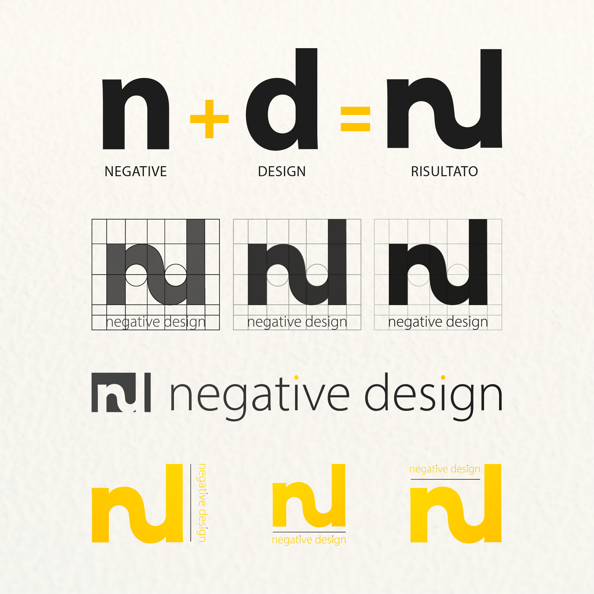
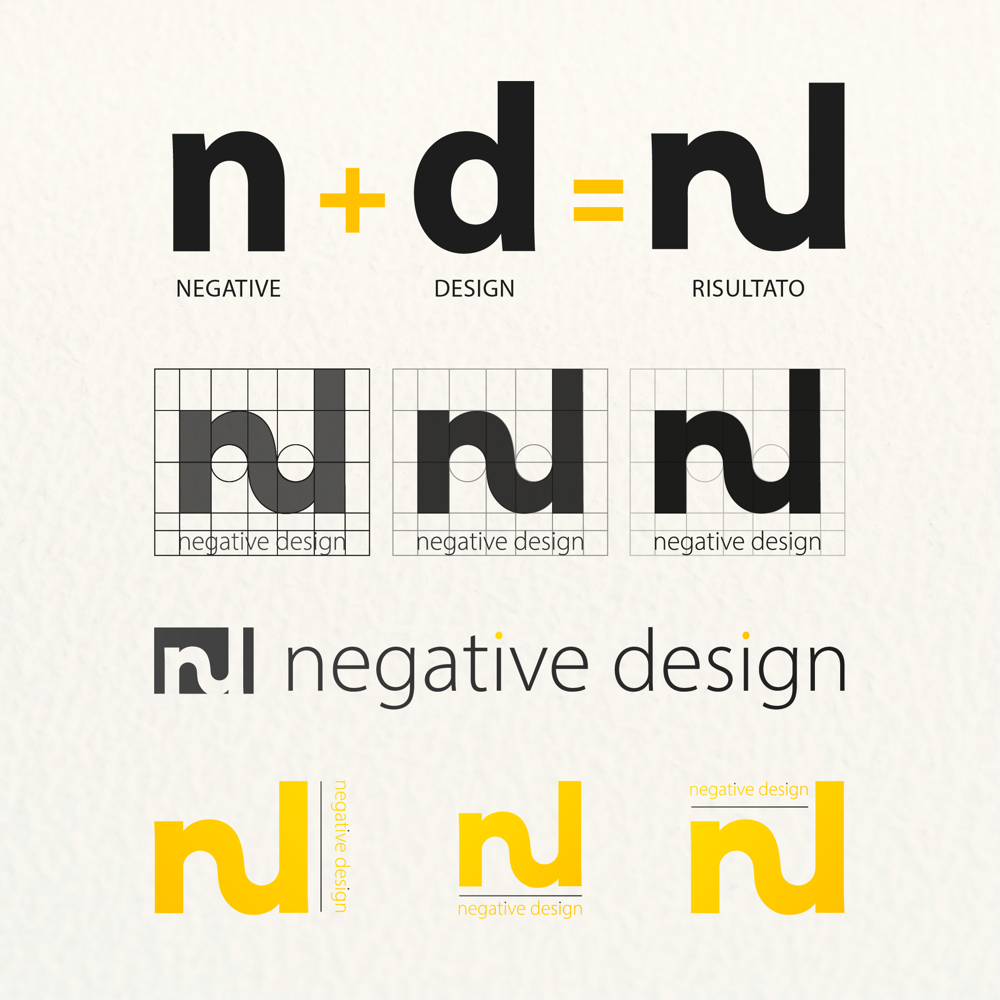

Ciao a tutti! Chi sono? Mi chiamo Maria Teresa, ma questo probabilmente lo avete già letto sopra; quello che forse non sapete è che sono una studentessa all'ultimo anno di Editoria, Illustrazione e Fumetto all'Accademia di Belle Arti. Ah, dettaglio non trascurabile: prima di iniziare questo corso di
Web Design, speravo di laurearmi in tempo. SPERAVO. Ora non più. Ma ok. OK. Scherzi a parte, sin dalle prime lezioni il corso mi ha aperto davvero a infinite possibilità, tanto da farmi venire la geniale idea di basare anche il mio progetto di Tesi Magistrale su Graphic&Web Design. Considerandoche non avevo mai scritto una riga di codice prima, direste che è Folle? Beh, forse lo è, ma è una sfida troppo divertente e io amo divertirmi.
Quindi eccomi qui a presentare il primo (e forse ultimo) sito che io abbia mai progettato: Negative Design. L'idea è quella di poter giocare un pò con le regole del design, romperne gli schemi se ci annoiano e anche imparare qualcosa di nuovo. L'idea è quella di implementare al più presto la piattaforma con un ebook interattivo con cui potersi confrontare prima o dopo aver giocato. Al momento sono presenti 4 giochi su: Carattere, Contrasto, Leggibilità e Kerning. Il sito è pensato per essere navigato principalmente da desktop, ma è disponibile anche in mobile responsive per favorirne una maggiore fruibilità da parte di tutti. A questo punto, se vi ho convinto a dare un'occhiata, cliccate sul bottone in alto e... buon divertimento!